Khajuraho
Madhya Pradesh's rich Heritage
Welcome to the 'Heart of India'-Madhya Pradesh
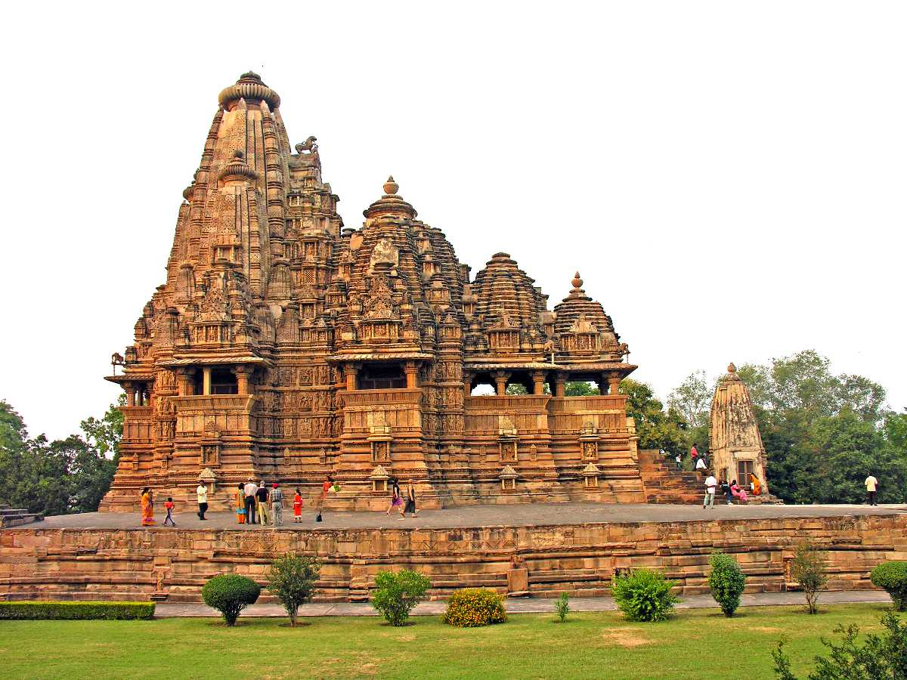
Madhya Pradesh is the official abode of the Maharajas and their majestic palaces. There is no state in India that is as diverse in terms of magnificent fort and palaces as Madhya Pradesh.Madhya Pradesh is a must-see state of India, brimming with startling, thought-provoking and, ultimately, unforgettable attractions. Madhya Pradesh got its name because of its geographical position, being located in the centre of India. However, it's tagline 'The Heart of Incredible India' has more to do with the fact that it houses facets of the whole of India into this state. From the historical monuments to modern amenities, culture, food and people- this state gives a taste of entire India packed within its geographical boundaries.
Madhya Pradesh's wealth comprises of
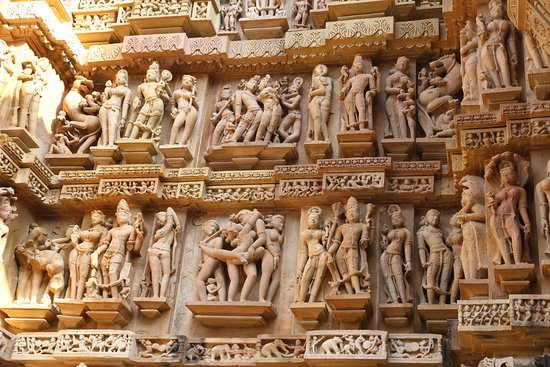
UNESCO world Heritage Sites
- Khajuraho group of Monuments
- Budhist Monument in Sanchi
- Rock shelter at Bhimbetka
- Bhedaghat-Lemhetaghat in Narmada Valley
- Satpura Tiger Reserve

Heritage Sites
- Gwalior
- Maheshwar(Khargone)
- Amarkantak(Annupur)
- Panchmarhi(Narmadapuram)
- Orchha(Tikamgarh)
- Mandu(Dhar)
- Bhojpur(Shivpuri)
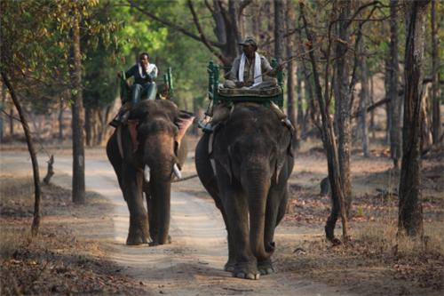
National Parks
- Kanha Kisli National Park
- Madhav National Park
- Pench National Park
- Bandhavgarh National Park
- Satpura National Park
- Vanvihar National Park
The State has endless things to explore
Culture
 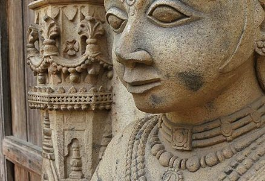
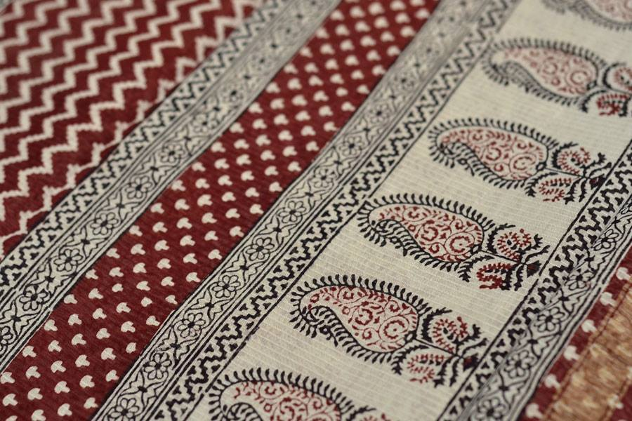
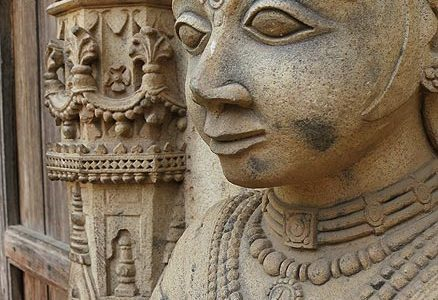
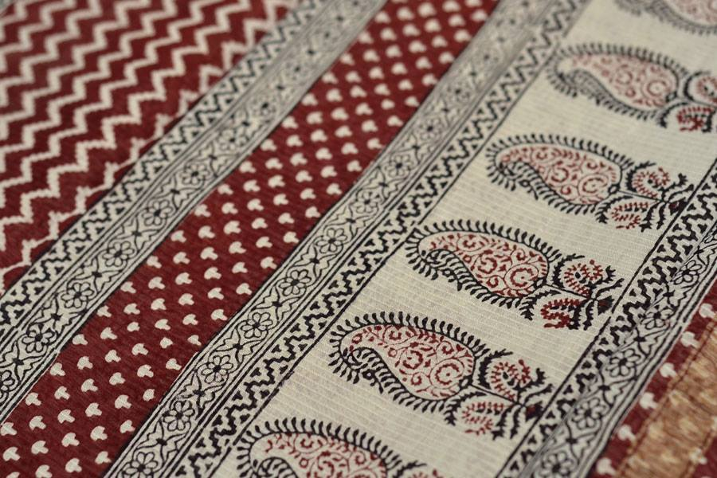
The inticate art of Madhya Pradesh reveal its rich culture and heritage.The works of art include bamboo and cane coverings, carpet weaving, durries, folk paintings, iron crafts, jute works, metal crafts, ornaments, Papier Mache, stone carving, stuffed toys, terracotta, textile weaving, woodcraft and Zari embroidery read more...
Tradition
 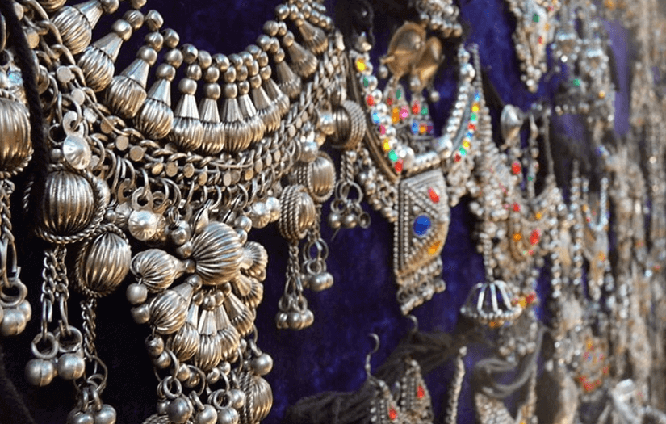
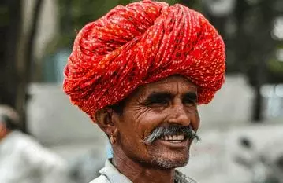
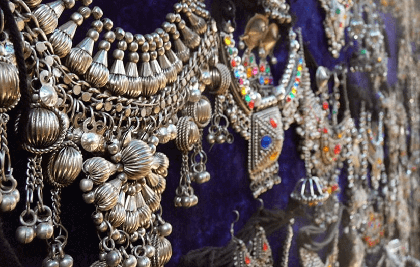
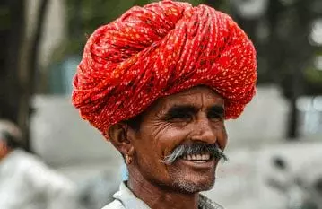
Madhya Pradesh has been, and still is, to a large extent dominated by its tribal population. So it is not surprising that the ethnic dance and music of Madhya Pradesh is also tribal in nature.Madhya Pradesh is one such land in India that emits vibrancy from every nook and corner. The heart of India hosts the best cultural and heritage festivals that can't be seen anywhere else in the world. People of various caste, religions and tribes are currently nestled in Madhya Pradesh. read more....
Folk dance and music
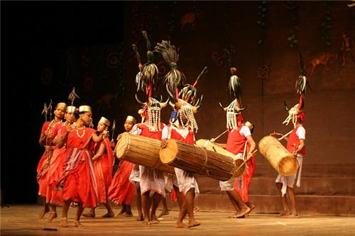 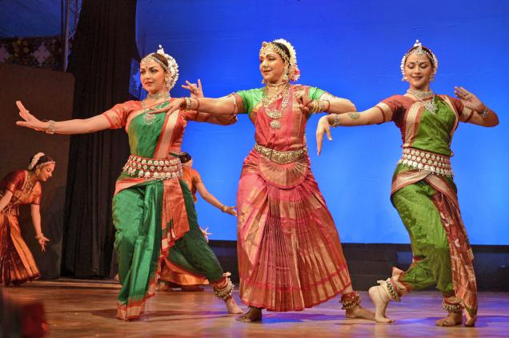 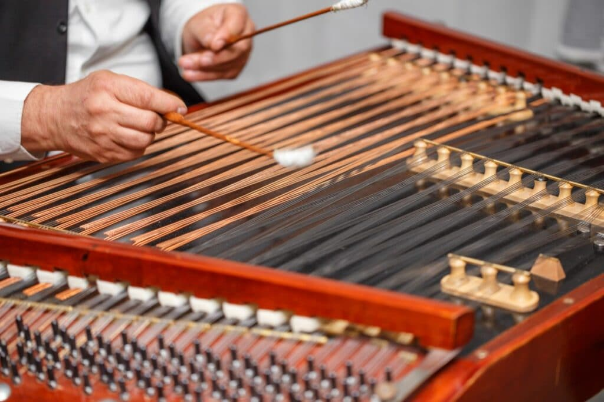Maanch dance is a lyrical folk dance and drama which hails from Malwa region and is a state dance of Madhya Pradesh.It is performed in native Malwi language but now a days translated into Hindi for others to understand. The Folk paintings of Madhya Pradesh are world famous for its beautiful representation of art combined with daily lives of tribal people of Madhya Pradesh. read more...
Food
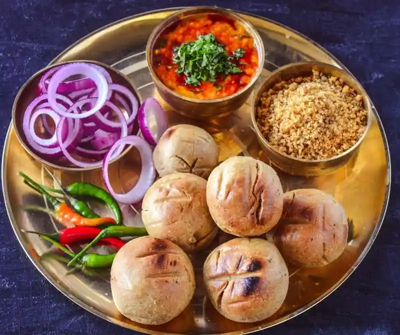 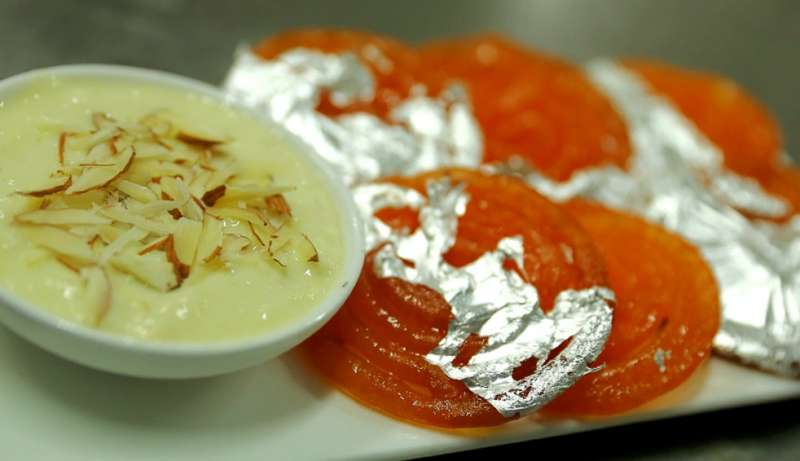
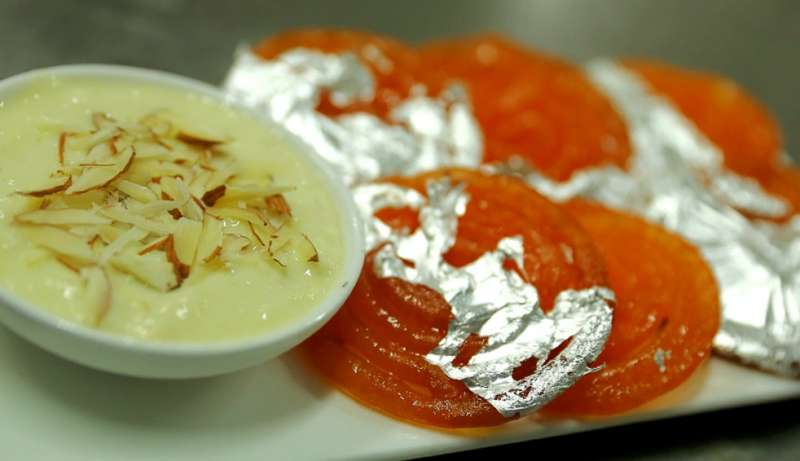
Madhya Pradesh’s cuisine comprises a wide variety of traditional food items which vary regionally. Wheat is the staple food of the state. Some famous vegetarian dishes include poha and jalebi, bhutte ki khees, and dal bafla.When it comes to healthy food, Madhya Pradesh has a plate full of delicacies that are not just palatable in taste but also provide a great source of nutrients. read more....